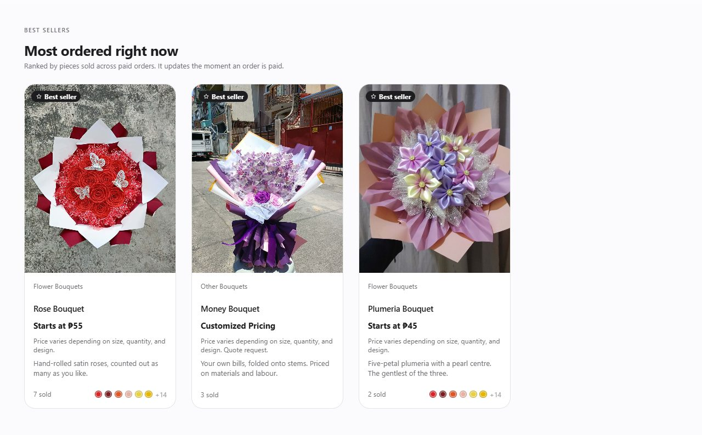
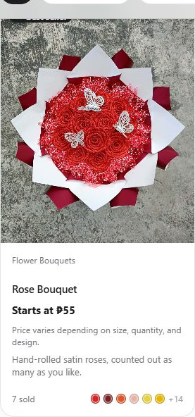

Module 1 · Part 1 · The shop window
Catalogue & Best Sellers
1Business process
What task or problem from the client are you solving?
The shop needs a front window: every bouquet and cake the customer can order, with its photo, its price label and how many have sold. Customers trust what other customers buy, so the products that sell the most are lifted into a "Best sellers" strip at the top.
The owner used to decide by hand what to call a best seller. Now the ranking is worked out from the real paid orders: buy ten roses and the rose moves up at once. Cancelled (voided) orders and requests that were never paid do not count.
2Input
What data is needed by the module?
| Input | What it is |
|---|---|
| Stored: orders | Every order record — its status (only paid and completed orders count) and its lines, each with a product id and a quantity. |
| Stored: products | The catalogue — name, price list, photos, and whether the product is active. |
| Customer picks | Nothing is typed: the strip is built when the page opens and after every sale. |
3Process
What data structure and/or algorithm did you use? How does it work step by step?
Input
- orders[] (status, lines, quantity)
- products[]
Process
- salesTally() — hash table, one pass over the orders
- salesRank() — one number per product
- selectionSortDesc() — O(n²) ranking
- topSellers(3)
Output
- Top 3 rows { product, units, orders }
- Best-seller cards and badges
- "N sold" on every card
Step by step (Hash table · Selection sort):
- 1Tally: make one row per product and put each row in a hash table keyed by product id. Then walk every paid or completed order once; each of its lines finds its product’s row with one hash look-up and adds its pieces (units). An order is counted once per product.
- 2Give each product a rank key: units × 100000 + orders, so pieces sold decide first and the number of orders only breaks a tie.
- 3Selection sort, descending: for position 0, scan the rest of the list for the largest key and move it to the front; repeat for position 1, 2, …
- 4Keep the first three that are active and have sold at least one piece; draw them as cards with a "Best seller" badge.
4Output
What result does the module produce?
- The "Best sellers" strip on the home page (three cards).
- A "Best seller" badge on those products in the catalogue and on the product sheet.
- The "N sold" count on every card, and the "Best selling" order of the catalogue sort.
- The Best sellers panel in the order desk Overview (top five, for the chosen day, month or year).
5Complexity analysis
What is the time complexity? What is the space complexity?
| Operation | Time | Space | Note |
|---|---|---|---|
salesTally() | O(n²) — each line of each order | O(n) | Counts, for every product, how many pieces were sold and in how many orders. |
salesRank() | O(1) | O(1) | Turns a row into one number so the sort can compare rows. |
selectionSortDesc() | O(n²) | O(n) | The selection sort itself — largest key first, and stable. |
topSellers() | O(n²) | O(n) | Ranks a tally and keeps the first k that are active and have sold. |
renderBestSellers() | O(n²) | O(n) | Draws the strip. |
What n means here: For the sort, n = number of products (10). For the tally, n = the order lines it reads — every line of every paid order.
Each Time and Space is read from the comment above the function in the source, where every function in js/ states its own cost.
6Justification
Why did you choose that data structure or algorithm? Why is it appropriate?
Selection sort: the list being ranked is tiny — ten products — so its O(n²) costs at most 45 comparisons. It is the clearest sort to explain and trace: each pass picks "the biggest one left". It is written to be stable (it shifts instead of swapping), so two products with the same sales keep their catalogue order instead of trading places on every refresh.
Hash table for the tally: counting product by product meant reading every order once per product. A row per product, found by its id in O(1) on average, lets one pass over the orders do the whole count.
A hand-kept "best seller" flag would go stale. Counting from the paid orders means it is always right, and a voided order drops out by itself.
7Demonstration
Show that the module works correctly — the input, the process and the output.
- 1Open index.html. Point at the "Best sellers" strip and the "N sold" labels.
- 2Add 10 Plumeria bouquets to the cart and check out (pay in full, any 13-digit reference such as 1234567890123).
- 3Scroll back up: Plumeria has jumped into first place, because 10 pieces beat the rose’s 7.
- 4In the order desk, void that order: Plumeria drops back. Cancelled orders do not count.


Trace — the best-seller ranking (computed by our code)
Input — salesTally() over the 22 demo orders (catalogue order)
One pass over the paid and completed orders and their lines; each line finds its product’s row with one hash-table look-up (hashGet by product id), so the orders are read once, not once per product.
| # | Product | Orders | Units | Rank key |
|---|---|---|---|---|
| 0 | Rose Bouquet | 6 | 7 | 700006 |
| 1 | Plumeria Bouquet | 2 | 2 | 200002 |
| 2 | Dahlia Bouquet | 1 | 1 | 100001 |
| 3 | Sunflower Bouquet | 0 | 0 | 0 |
| 4 | Money Bouquet | 3 | 3 | 300003 |
| 5 | Makeup Bouquet | 1 | 1 | 100001 |
| 6 | Picture Bouquet | 1 | 1 | 100001 |
| 7 | Sweets & Snacks Bouquet | 0 | 0 | 0 |
| 8 | Diaper Cake | 1 | 1 | 100001 |
| 9 | Beer-in-Can Cake | 1 | 1 | 100001 |
Process — selectionSortDesc(tally, salesRank)
The rank function was called 90 times: two reads per comparison, so 45 comparisons for n = 10 — exactly n(n−1)/2 = 45, the O(n²) of selection sort.
| Rank | Product | Units | Orders |
|---|---|---|---|
| 1 | Rose Bouquet | 7 | 6 |
| 2 | Money Bouquet | 3 | 3 |
| 3 | Plumeria Bouquet | 2 | 2 |
| 4 | Dahlia Bouquet | 1 | 1 |
| 5 | Makeup Bouquet | 1 | 1 |
| 6 | Picture Bouquet | 1 | 1 |
| 7 | Diaper Cake | 1 | 1 |
| 8 | Beer-in-Can Cake | 1 | 1 |
| 9 | Sunflower Bouquet | 0 | 0 |
| 10 | Sweets & Snacks Bouquet | 0 | 0 |
Output — bestSellers(3)
1. Rose Bouquet (7 sold) 2. Money Bouquet (3 sold) 3. Plumeria Bouquet (2 sold)
Then — placeOrder() for 10 Plumeria bouquets, paid in full
bestSellers(3) is now: 1. Plumeria Bouquet (12 sold) 2. Rose Bouquet (7 sold) 3. Money Bouquet (3 sold). Ten pieces moved Plumeria to first place at once.
Code walkthrough
The real functions, with their line numbers in the files today. The numbered markers in the code match the explanation under it.
js/store.js · lines 572–596 · salesTally() — Counts, for every product, how many pieces were sold and in how many orders.
572/* Orders and units per product, optionally only for orders a test573accepts (a date range). One row per product, in catalogue order; a574hash table keyed by product id finds a line's row in O(1) average, so575every order is read once instead of once per product.576Time O(n²) — each line of each order · Space O(n) */577function salesTally(include) {5781var out = [], rowFor = hashCreate(31);579for (var p = 0; p < products.length; p++) {580var row = { product: products[p], orders: 0, units: 0, lastOrder: -1 };581listAdd(out, row);5822hashPut(rowFor, String(products[p].id), row);583}584for (var o = 0; o < orders.length; o++) {5853if (!countsAsSale(orders[o]) || (include && !include(orders[o]))) continue;586var items = orders[o].items;587for (var i = 0; i < items.length; i++) {5884var hit = hashGet(rowFor, String(items[i].productId));589if (hit === null) continue;5905hit.units += items[i].quantity;591// Count the order once, however many of its lines are this product.5926if (hit.lastOrder !== o) { hit.orders++; hit.lastOrder = o; }593}594}595return out;596}
- 1line 578 A list of rows, and a hash table to find a row by product id.
- 2line 582 Make one row per product and index it by the product id.
- 3line 585 Skip orders that are not paid or completed — voided and unpaid ones never count.
- 4line 588 Each line finds its product’s row with one hash look-up.
- 5line 590 Add the line’s pieces to that product.
- 6line 592 Count the order once per product, however many lines it has.
Time O(n²) — each line of each order · Space O(n)
js/store.js · lines 610–615 · salesRank() — Turns a row into one number so the sort can compare rows.
610/* The rank key: total units sold first, then the number of orders to611break a tie. Buying more of a product counts every piece, so a large612order moves it up the ranking at once. Time O(1) · Space O(1) */613function salesRank(row) {6141return row.units * 100000 + row.orders;615}
- 1line 614 Units dominate; the order count only matters when units tie.
Time O(1) · Space O(1)
js/algorithms.js · lines 62–78 · selectionSortDesc() — The selection sort itself — largest key first, and stable.
62function selectionSortDesc(records, countOf) {631var work = copyArray(records);642for (var i = 0; i < work.length - 1; i++) {65var best = i;66for (var j = i + 1; j < work.length; j++) {67// Strictly greater, so ties keep their catalogue order.683if (countOf(work[j]) > countOf(work[best])) best = j;69}70if (best !== i) {71var held = work[best];72// Shift rather than swap, so the sort stays stable.734for (var k = best; k > i; k--) work[k] = work[k - 1];745work[i] = held;75}76}77return work;78}
- 1line 63 Sort a copy, so the original tally is untouched.
- 2line 64 Pass i fills position i.
- 3line 68 Scan everything after i for the largest key. Strictly greater keeps ties in their old order.
- 4line 73 Shift the items between i and best one place right…
- 5line 74 …and drop the largest into position i. Shifting (not swapping) is what makes it stable.
Time O(n²) · Space O(n)
js/store.js · lines 624–633 · topSellers() — Ranks a tally and keeps the first k that are active and have sold.
624/* Rank any tally — the whole history, or one day, month or year.625Time O(n²) · Space O(n) */626function topSellers(tally, k) {6271var ranked = selectionSortDesc(tally, salesRank);628var out = [];629for (var i = 0; i < ranked.length && out.length < k; i++) {6302if (ranked[i].units > 0 && ranked[i].product.active) listAdd(out, ranked[i]);631}632return out;633}
- 1line 627 Sort the rows by the rank key.
- 2line 630 Leave out disabled products and products nobody has bought.
Time O(n²) · Space O(n)
js/shop-catalog.js · lines 71–83 · renderBestSellers() — Draws the strip.
71/* Time O(n²) · Space O(n) */72function renderBestSellers() {731var top = bestSellers(3), ids = [];74for (var i = 0; i < top.length; i++) listAdd(ids, top[i].product.id);75var grid = $('#bestSellers');76if (top.length === 0) {77grid.innerHTML = '<p class="t-callout dim">No paid orders yet — the first ones will appear here.</p>';78return;79}80var rows = [];81for (var k = 0; k < top.length; k++) listAdd(rows, { product: top[k].product, orders: top[k].orders, units: top[k].units });822grid.innerHTML = renderEach(rows, function (row) { return productCard(row, ids); });83}
- 1line 73 Ask for the top three.
- 2line 82 Render each one as a product card with the badge.
Time O(n²) · Space O(n)